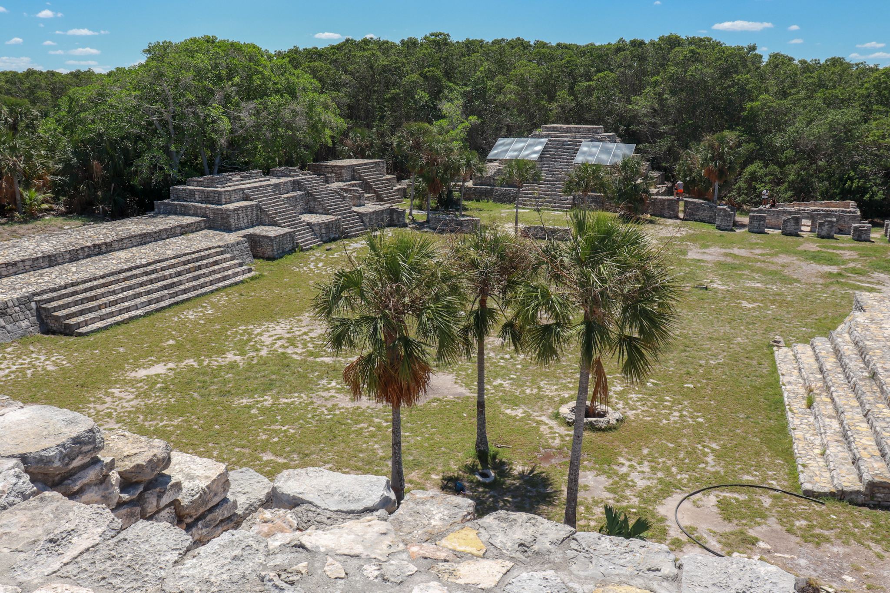

X'Cambó
Dzemul, Yucatán
Xcambó (X'Cambó) es un yacimiento arqueológico que se encuentra ubicado en el municipio de Dzemul en el estado mexicano de Yucatán.
Es considerada por los expertos como una de los yacimientos de mayor extensión en la costa norte peninsular,
contando con edificios de grandes dimensiones. Se asienta sobre el bosque húmedo de la ciénaga, a solo 2 kilómetros de la costa del Golfo de México,
en el norte de la península, aproximadamente 40 km al noreste de la ciudad de Mérida, capital del estado de Yucatán.
Costo por accesso: Parcial